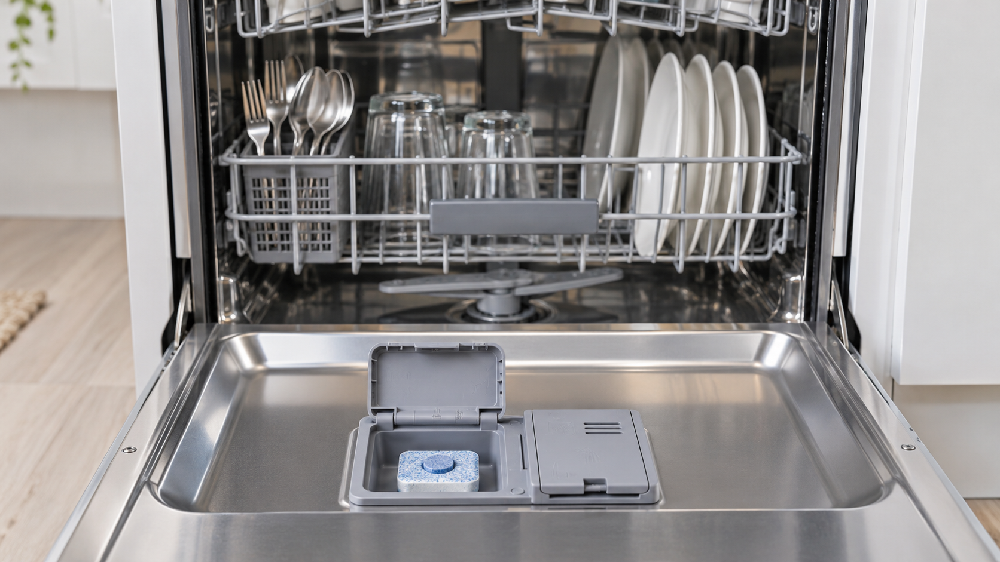

세척 후 세제 캡슐이 남는다면 투입구가 그릇에 막혔는지, 물 분사와 급수 온도가 충분한지, 세제가 눅눅하지 않은지 확인하세요. 캡슐을 여러 개 넣으면 잔류와 거품만 늘 수 있습니다.
일반 주방세제를 넣거나 서로 다른 세제를 섞거나 분사구를 날카로운 도구로 넓히지 마세요.
세제함이 열리지 않거나 물이 데워지지 않거나 분사팔이 돌지 않으면 점검받으세요. 식기세척기 세척력 저하 해결법도 참고하세요.
제품별 차이가 있으므로 제조사 공식 사용설명서와 고객지원 안내를 우선 확인하세요.